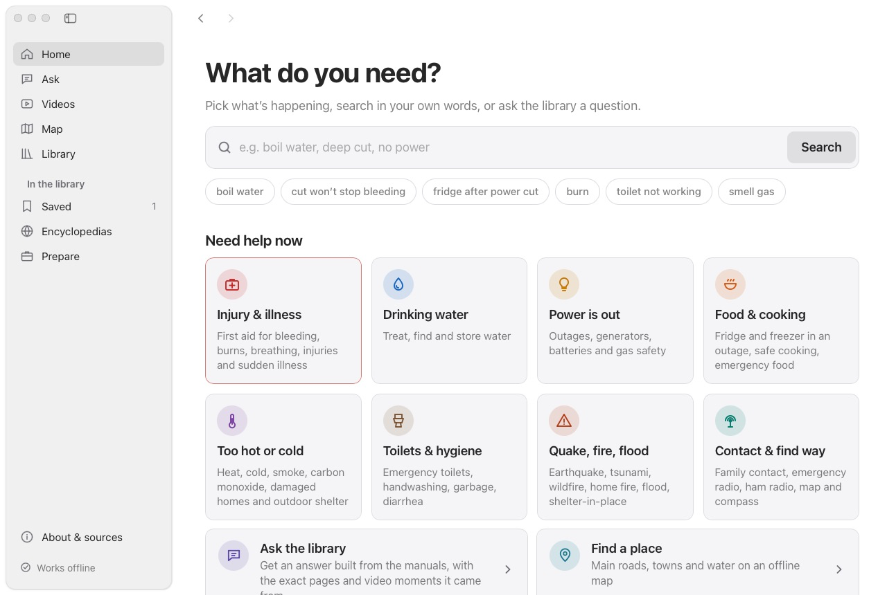
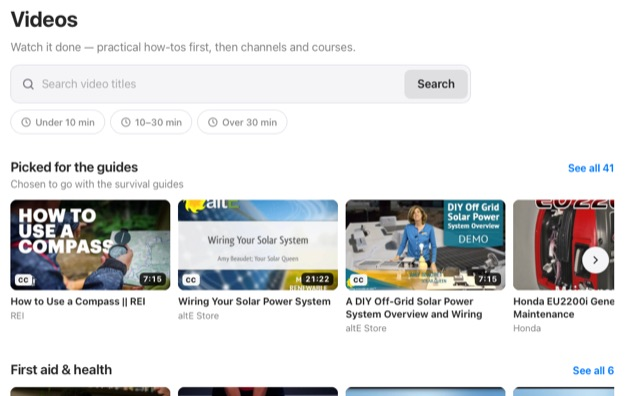
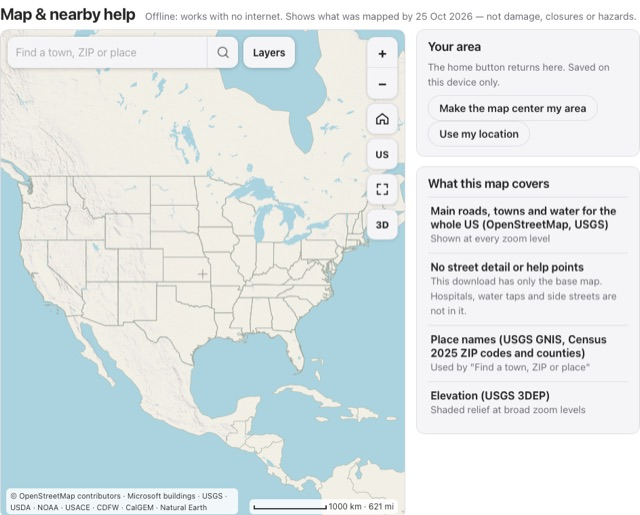
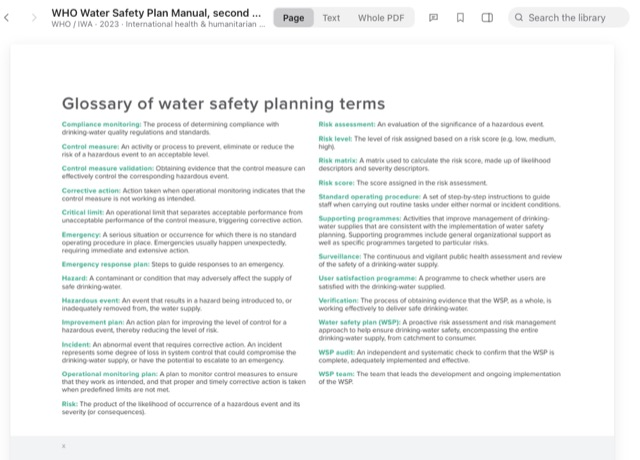
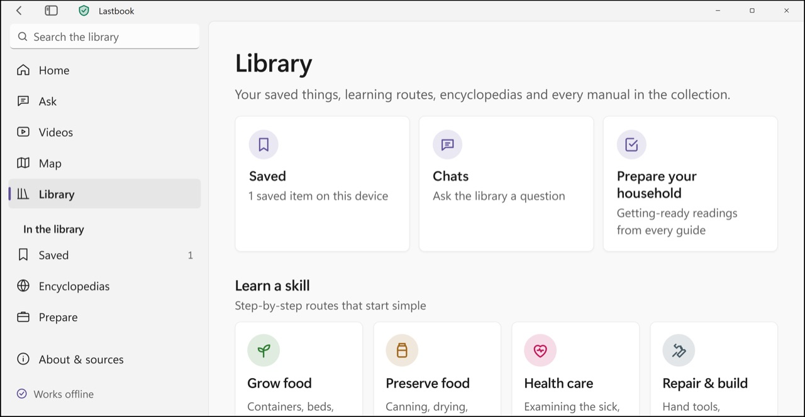

Version 1.0.0 is here. Free for Mac and Windows.
A free library for when the internet or power is gone.
Survival and repair guides, medical books, encyclopedias, how-to videos and a map. All on your own computer.
Lastbook runs on Mac and Windows computers, not phones. Open this page on your computer to download it.
-
Get the app
Not on Windows?
Download for Mac Lastbook 1.0.0 · 22.5 MBApple Silicon (M1 or newer). macOS 14 Sonoma or newer.
-
Get the library
Download the library Small · 8.2 GBYou need about 17 GB of free space while it unzips. On a slow connection it can take hours.
-
Open it
The first time, your computer warns you. That's expected.
See what to click

No internet. No account. No tracking.
- It never uses the internet. Everything is on your computer, so it works with no signal.
- It runs on battery. A charged laptop is all it needs when the power is out.
- Free, with no sign-up. Nothing about you leaves your computer.
This website has no cookies and no tracking either. The downloads come straight from our file storage.
What's inside
The Small library, 8.2 GB.
- 148books and manuals 12,894 pages, as printed
- 45saved web guides
- 41how-to videos
- 2encyclopedias MDWiki (medical) and Appropedia (practical how-to)
- 1map of the whole US Main roads, towns and water
From Hesperian Health Guides (Where There Is No Doctor), FEMA and Ready.gov, the World Health Organization, the American Red Cross, FAO, NOAA's National Weather Service, Médecins Sans Frontières, ARRL, the National Center for Home Food Preservation and many more.
See everyone whose work is in it
Not clinically reviewed. Lastbook doesn't replace trained care. In an emergency, call 911 if you can.
What it looks like
-

Watch it done
41 how-to videos, from first aid to solar power.
-

A map with no signal
Find a town or ZIP code. Main roads, towns and water for the whole US.
-

Read the real book
148 books and manuals. Every page as printed, or as plain text you can make large.

How to open it
Version 1.0 isn't signed yet. So the first time, your computer asks you to confirm. You only do this once.
Mac
- Open Lastbook-1.0.0-mac.dmg. Drag Lastbook to Applications.
- Double-click Lastbook-Small.zip in Downloads. It makes a folder called LastbookData. Leave it there.
- Open Lastbook. If macOS warns you, don't click Move to Trash.
Windows
- Right-click Lastbook-Small.zip in Downloads. Choose Extract All.
- Double-click Lastbook-1.0.0-Setup.exe. If Windows warns you, click More info, then Run anyway.
- Click Install, then Open Lastbook.
Set it up now, while you have internet and power.
Then it's ready when you need it. You need about 17 GB of free space.
A bigger library, Medium (67 GB), comes later.
Full steps
Mac
For Apple Silicon Macs (M1 or newer) with macOS 14 Sonoma or newer.
- Open Lastbook-1.0.0-mac.dmg.
- Drag Lastbook to Applications. Then eject the Lastbook disk in the Finder sidebar.
- Leave Lastbook-Small.zip in Downloads and double-click it. Wait until it finishes. It makes a folder called LastbookData. Leave it there.
If you already see a LastbookData folder in Downloads, leave it there and skip this step. - Open Lastbook from Applications.
The first time, macOS warns that it can't check Lastbook. That is expected. Don't click Move to Trash.
macOS 15 Sequoia or newer
- Click Done.
- Open System Settings > Privacy & Security.
- Scroll down to Security. Next to the line that says Lastbook was blocked, click Open Anyway.
- When asked, click Open Anyway (or Open), and use Touch ID or your Mac password.
If the button is gone, open Lastbook again and come back within an hour.
macOS 14 Sonoma
- Click Cancel.
- Open Applications in the Finder.
- Control-click Lastbook. Choose Open.
- Click Open.
You only do this once.
If your Mac asks to let Lastbook use your Downloads or Documents folder, click Allow. That is how it finds the library.
Windows
For Windows 10 or 11, 64-bit.
- Right-click Lastbook-Small.zip in Downloads and choose Extract All.
- Click Extract. Keep the folder it suggests. Wait until it finishes, which can take several minutes.
- Double-click Lastbook-1.0.0-Setup.exe in Downloads.
- If Windows protected your PC appears, click More info, then Run anyway.
- Click Install, then Open Lastbook.
Next time, open Lastbook from the Start menu.
Windows 11 only: Smart App Control may block Lastbook, because it isn't signed yet. There is no way to allow just one app.
If Windows says Smart App Control blocked Lastbook, open Windows Security > App & browser control > Smart App Control settings and choose Off. On an up-to-date Windows 11 you can turn it back on later.
A signed version that doesn't need this is coming.
Why the warning?
Apple and Microsoft expect app makers to register a digital signature. Lastbook doesn't have one yet, so your computer shows a warning. A signed version comes later.
Lastbook never uses the internet.
If Lastbook can't find the library
It asks you. Choose the LastbookData folder. It is in Downloads, or on Windows in Downloads > Lastbook-Small.
Check your downloadOptional. You can skip this.
This proves the file you got is exactly the one we made. SHA-256 of each file:
- Lastbook-1.0.0-mac.dmg
592daf8387b7cec099dbe1811158845dfd87bbb2a0ba37ae15da92387d75d447- Lastbook-1.0.0-Setup.exe
b36d10291137492124ff7d9e2b5c993bd01ef00fcc5fc32e72e6c413e96dedc6- Lastbook-Small.zip
55a3d9b2bad7288786a60baf120ba861b1a9497199a3540d303886d7c2fad773